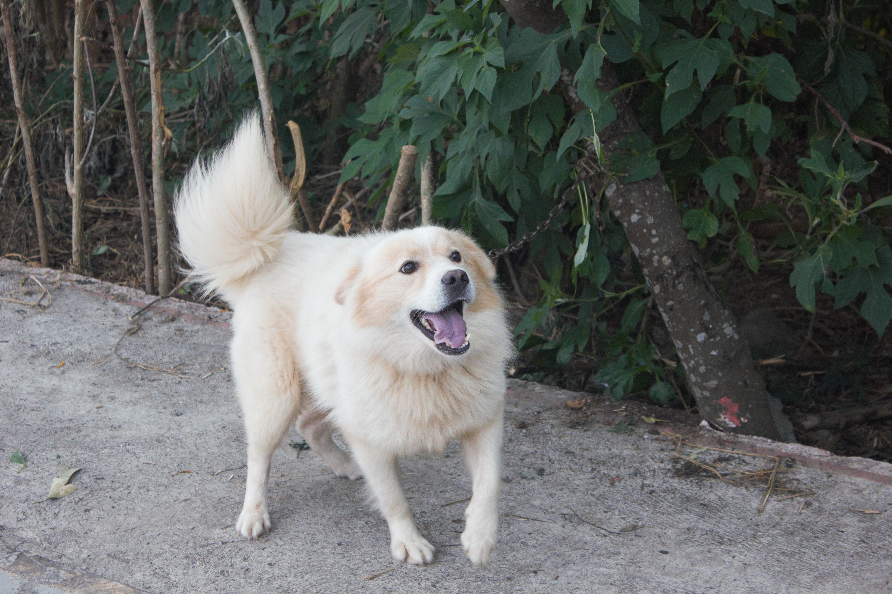
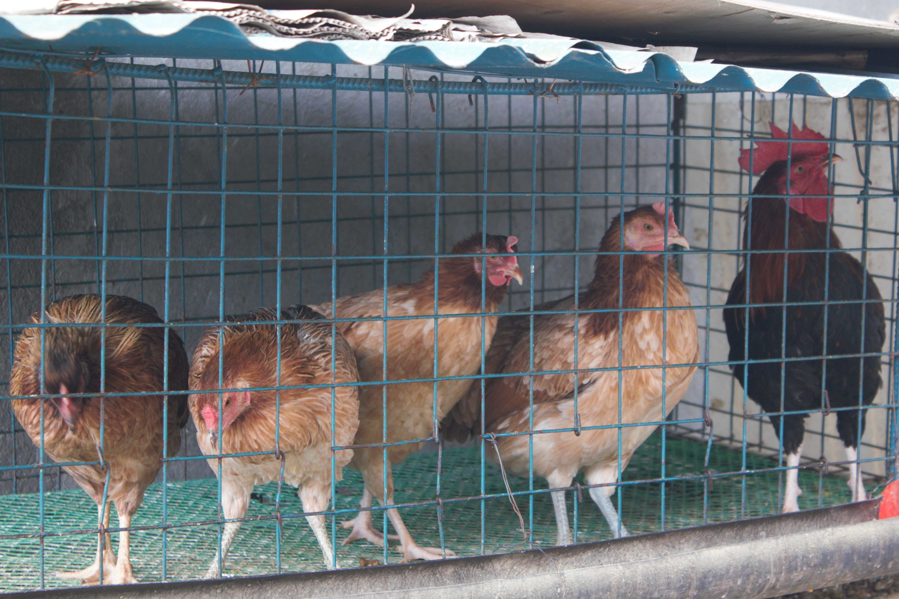
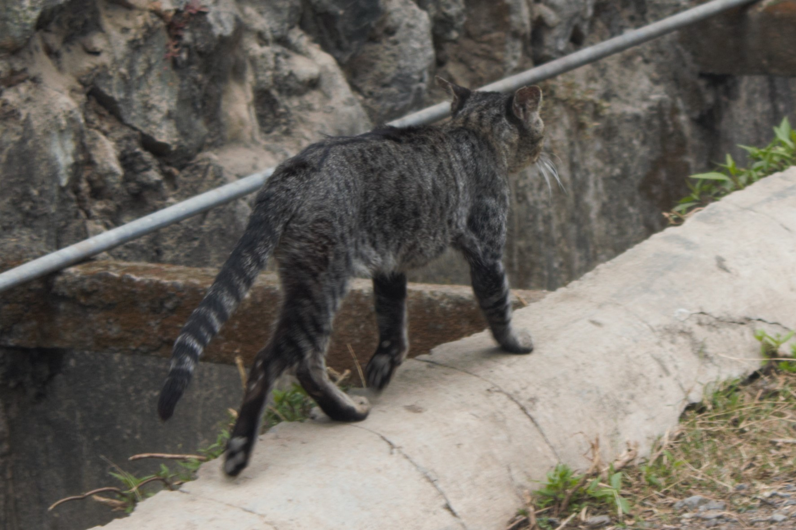
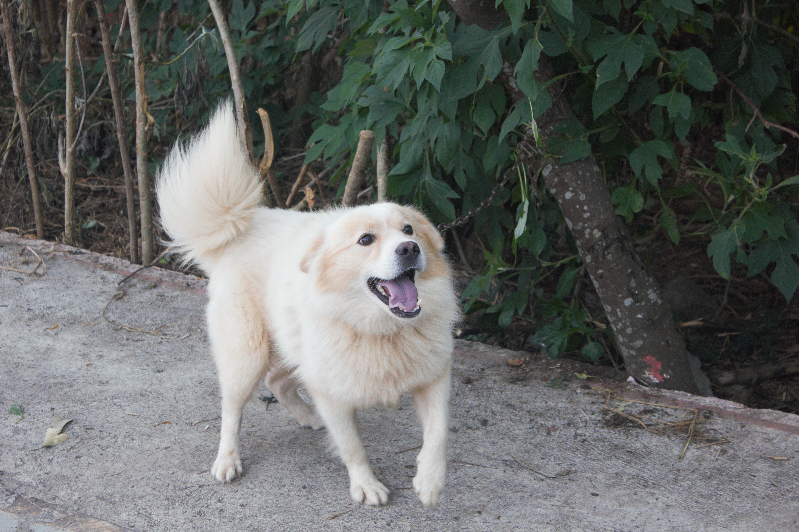
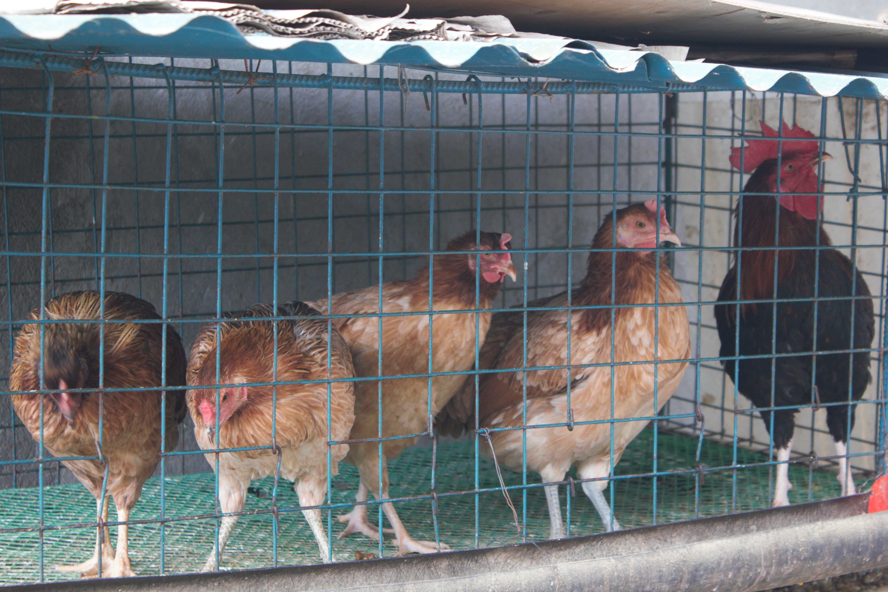
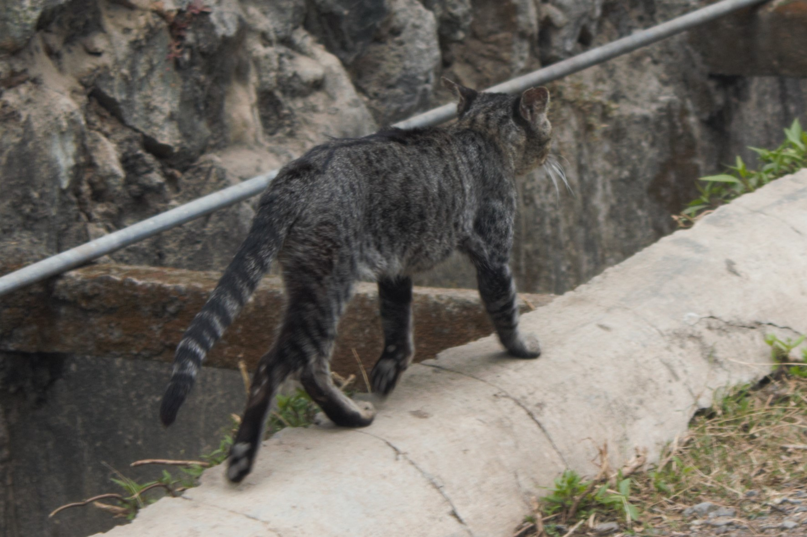
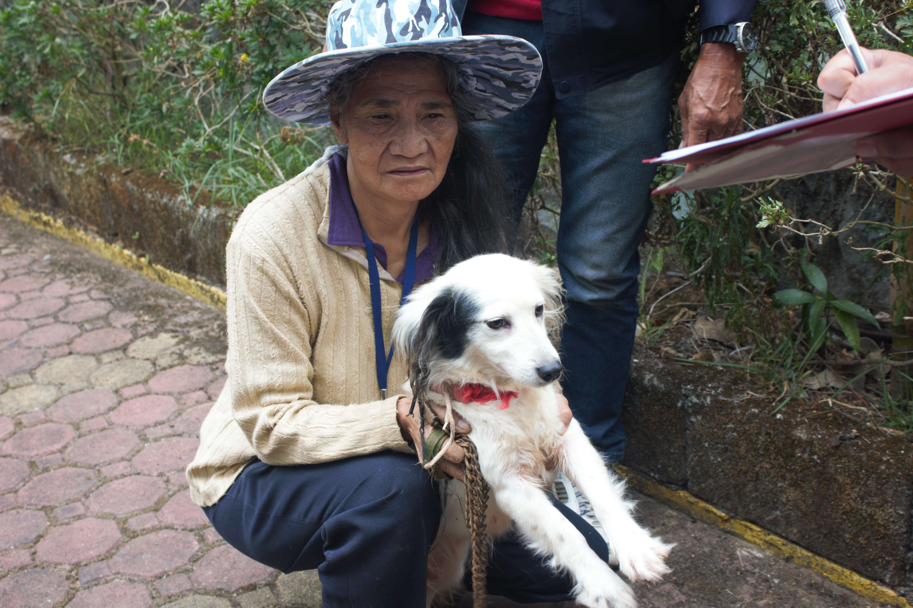

Animal Welfare
Animal welfare pertains to the well-being of an animal. It comprises of the state of the animal physically and mentally In Fort Del Pilar they take this seriously, FDP is a barangay that is surrounded by several species of animals such as dogs, cat, birds, cows, chicken, and other more kinds of animals